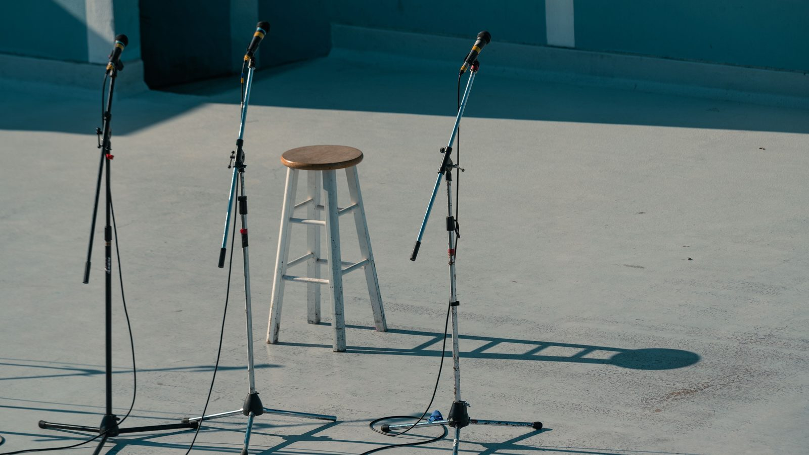

Itapema · Cultura
Itapema · CulturaPrefeitura mantém aberto o cadastro de artistas para eventos da cidade, e a lista é maior do que parece
O credenciamento de onde saem todas estas contratações.
Juntamos as onze contratações de artistas que a Prefeitura de Itapema publicou no Diário Oficial dos Municípios entre 26 de agosto e 15 de setembro. Elas somam R$ 69.871,00 e 93 apresentações. Três são deste fim de semana: a dupla Kevin & Wesley e o DJ JP tocam no sábado, 19, na Feira Cultura em Movimento, e a Banda Sambaré toca no domingo, 20, no Projeto Viva Praia. O grosso do dinheiro, porém, não está nos shows de fim de semana: R$ 38.500,00 pagam 77 bailes semanais no Centro de Convivência do Idoso até dezembro, a R$ 500,00 cada.
Em 30 segundos · Modo de Leitura, formato original Santa Informa
A Prefeitura contrata artista direto.
Sem licitação, e isso é o previsto.
Vale o credenciamento 08.002.2026.
Nós juntamos onze contratações.
Publicadas de 26/08 a 15/09.
Somam R$ 69.871,00.
E 93 apresentações.
A maior fatia é de baile.
77 bailes semanais até dezembro.
No Centro de Convivência do Idoso.
R$ 500,00 por baile.
Total de R$ 38.500,00.
Sobram 16 apresentações.
Que custam R$ 31.371,00.
Neste sábado, 19, tem feira.
É a Feira Cultura em Movimento.
Toca Kevin & Wesley.
Por R$ 3.402,00.
E o DJ JP, em dois blocos.
17h às 18h e 19h30 às 20h30.
Por R$ 1.364,00.
No domingo, 20, tem Viva Praia.
Com a Banda Sambaré.
Por R$ 3.402,00.
A mais cara foi na Farroupilha.
R$ 10.500,00 por sete apresentações.
Do Tropeiros do Litoral.
Poder PúblicoPublicada em Redação Santa Informa

A Prefeitura de Itapema publicou no Diário Oficial dos Municípios, entre 26 de agosto e 15 de setembro, onze contratações de artistas. Nós abrimos as onze e somamos: R$ 69.871,00 e 93 apresentações. Três delas acontecem neste fim de semana. No sábado, 19, a dupla Kevin & Wesley toca na Feira Cultura em Movimento, por R$ 3.402,00, e o DJ JP faz dois blocos no mesmo evento, das 17h às 18h e das 19h30 às 20h30, por R$ 1.364,00. No domingo, 20, a Banda Sambaré toca no Projeto Viva Praia, por R$ 3.402,00. As três contratações foram homologadas em 14 e em 9 de setembro, e até o fechamento desta matéria nenhuma delas tinha sido anunciada na página de notícias da Prefeitura.
O dinheiro não está onde parece. Dos R$ 69.871,00, R$ 38.500,00 vão para bailes semanais na Secretaria Municipal da Pessoa Idosa, no Centro de Convivência do Idoso, entre setembro e dezembro. São dois contratos, um de 43 apresentações por R$ 21.500,00 e outro de 34 por R$ 17.000,00, o que dá R$ 500,00 por baile nos dois casos. Isso é 77 das 93 apresentações e 55% do valor. As outras 16 apresentações custam R$ 31.371,00 juntas. A mais cara da lista é a do Grupo Folclórico Tropeiros do Litoral, R$ 10.500,00 por sete apresentações na Semana Farroupilha, ou R$ 1.500,00 cada.
Nenhuma dessas contratações passou por licitação, e isso é o previsto na regra. Todas saem do Chamamento Público 08.002.2026, o credenciamento de artistas e produtores de eventos que a Prefeitura mantém aberto e que nós já explicamos aqui, com base no artigo 74, inciso IV, da Lei Federal 14.133/2021. No credenciamento o artista se inscreve numa formação, e o preço vem de tabela. Os extratos não publicam essa tabela, mas os valores se repetem, e dá para desenhá-la: solo, R$ 1.134,00; trio, R$ 2.039,00; quarteto, R$ 2.726,00; grupo de cinco ou mais, R$ 3.402,00; grupo de cultura tradicional, R$ 1.500,00 por apresentação; DJ solo, R$ 682,00 por bloco; e solo semanal, R$ 500,00. Um mesmo prestador pode estar credenciado em mais de uma formação, e é o que acontece: o CNPJ de Kevin & Wesley aparece em três, como dupla, como grupo de cinco ou mais e como solo semanal dos bailes.
Os extratos dizem o dia, mas não o endereço. Nas edições deste ano a Feira Cultura em Movimento aconteceu na Praça da Paz e na orla do Centro, e o Projeto Viva Praia, na Orla Central, sempre com entrada livre. O único horário publicado até agora é o dos dois blocos do DJ de sábado. Vale conferir a confirmação do local nos canais da Prefeitura antes de sair de casa.
O resumo de 30 segundos está no topo e a versão completa é o texto acima. Aqui ficam as três leituras da casa sobre o mesmo assunto.
Clara, a otimista
Gosto de ver para onde esse dinheiro vai. Mais da metade não está em palco grande de fim de semana, está em baile de idoso toda semana, até dezembro. São 77 tardes de música no Centro de Convivência, e isso é política pública que quase ninguém fotografa.
E o credenciamento faz o dinheiro ficar aqui. Os contratados são gente com CNPJ pequeno, dupla, trio, DJ, grupo folclórico, e não produtora de fora que leva o cachê embora. Quem toca na Praça da Paz no sábado é quem mora e trabalha na região.
Seu Prudêncio, o criterioso
Merece atenção o fato de a tabela de preços não sair junto com os extratos. Cada publicação informa a formação contratada e o valor, mas não o preço de referência daquela formação. Quem quiser conferir precisa juntar onze publicações de dias diferentes e deduzir a tabela, que foi o que fizemos aqui, e dedução não é conferência.
Vale acompanhar também o aviso ao público. Três apresentações pagas acontecem neste fim de semana e o anúncio delas saiu primeiro no Diário Oficial, que quase ninguém lê, e ainda não na página de notícias da Prefeitura, que é onde o morador procura. O evento fica mais barato por espectador quanto mais gente souber que ele existe.
Uma sugestão útil: publicar a tabela do chamamento numa página fixa do site, e repetir o link em cada extrato. O documento já existe e já é público, e isso encerraria a dúvida sem custo nenhum.
Dito isso, o caminho escolhido está correto. Credenciamento com preço de tabela e chamamento aberto é justamente o formato que tira a escolha do cachê do caso a caso, e os valores aqui são modestos: o show mais caro do fim de semana custa menos que uma diária de retroescavadeira.
Caco, o sarcástico
Descobri a agenda cultural do meu fim de semana lendo extrato de inexigibilidade de licitação. Recomendo a todos, é leve, tem enredo e no fim tem música.
Também aprendi que existe modalidade chamada solo semanal, que paga R$ 500,00 e roda 43 vezes. É o único artista de Itapema com estabilidade de emprego até dezembro.
Mas olha, tem baile toda semana para os idosos, tem feira no sábado, tem praia com banda no domingo e tudo por menos de R$ 70 mil em três semanas. Tá pouco divulgado, mas é bastante coisa.
Fontes: as onze contratações foram lidas uma a uma no Diário Oficial dos Municípios de Santa Catarina, todas publicadas pela Prefeitura de Itapema. Kevin & Wesley na Feira Cultura em Movimento de 19 de setembro, por R$ 3.402,00, está na Inexigibilidade nº 06.068.2026; o DJ JP, com os dois blocos e o valor de R$ 1.364,00, na Inexigibilidade nº 06.067.2026; a Banda Sambaré no Projeto Viva Praia de 20 de setembro, por R$ 3.402,00, na Inexigibilidade nº 06.063.2026; Luciano Guarise na Semana Farroupilha, na Inexigibilidade nº 06.065.2026; o Grupo Folclórico Tropeiros do Litoral, com sete apresentações por R$ 10.500,00, na Inexigibilidade nº 06.061.2026; Peter Allan Ramos no lançamento do Plano de Turismo, na Inexigibilidade nº 06.062.2026; Kevin & Wesley na Semana Farroupilha, na Inexigibilidade nº 06.058.2026; a banda Plano Cruzado no Encontro Antigomobilista, na Inexigibilidade nº 06.056.2026; a banda StarFix no mesmo encontro, por R$ 2.726,00, na errata do extrato do Processo nº 137/2026; e os dois contratos de bailes semanais no Centro de Convivência do Idoso, de 43 e de 34 apresentações, nos extratos publicados em 4 de setembro e em 4 de setembro. As somas, a média por baile e a tabela de preços por formação são contas e leituras nossas sobre esses documentos. O funcionamento do credenciamento de artistas de Itapema está na nossa matéria Prefeitura mantém aberto o cadastro de artistas para eventos da cidade.
Itapema · CulturaO credenciamento de onde saem todas estas contratações.
 Itapema · Cultura
Itapema · CulturaO outro caminho do dinheiro da cultura na cidade.
O evento onde foram sete das apresentações contratadas.